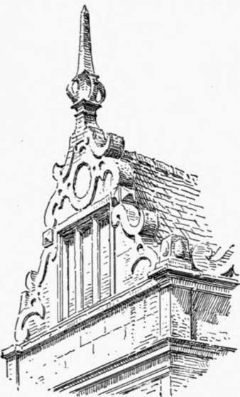
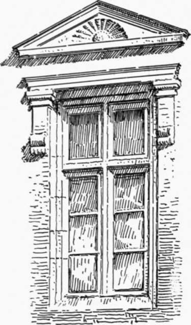
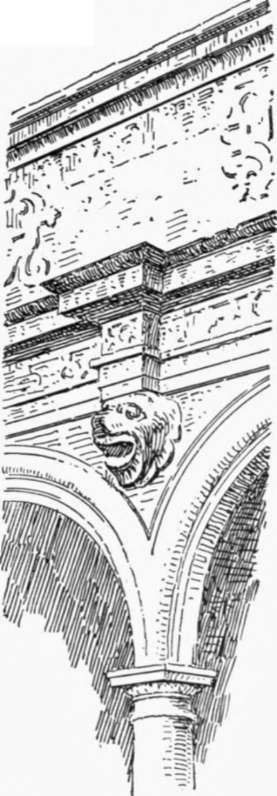

Renaissance In England. Part 2
Description
This section is from the book "Character Of Renaissance Architecture", by Charles Herbert Moore. Also available from Amazon: Character of Renaissance Architecture.
Renaissance In England. Part 2
The general scheme has no English character, and it so nearly resembles that of the court of Charleval, in France, (cf. p. 212) as to suggest that its designer may have been influenced by the French composition. The effect of the scheme, as a whole, from the point of view of structure, is curious with its great pilasters of unusual projection, which have the function of supporting nothing but miniature pedestals and finials. In a general view the low attic wall has somewhat the effect of an entablature, though it is behind, and not over, the pilasters; but considered as an entablature its frieze is encumbered with the pediments of the windows which rise against it. The windows are, however, an alteration, and the original scheme may be better judged of from the opposite, or south, side of the court. Here the attic has distinctly the appearance of an entablature of somewhat suitable proportions for the order; though, here too, it is behind the pilasters, and does not rest upon them. The facade on this side is in one story, with a tall mullioned and transomed window in each bay. With a proper entablature the scheme would not be a bad one. The wall being almost wholly eliminated by the great window voids, the order would have the true function of upholding the roof if a true entablature and the roof were where they ought to be. But not only is the attic wall, substituted for an entablature, in retreat of the pilasters, but the roof rises from behind the attic, so that this last becomes a parapet.
1 A History of Renaissance Architecture in England, by Reginald Bloom-field, M.A., London, 1897
2 Almost nothing is known of John Thorpe beyond what may be gathered from his numerous drawings preserved in the Soane Museum. He was working during the latter part of the sixteenth century, and appears to have been the original designer of some of the larger houses of that time, the plans of which are contained in the Soane collection.
3 These windows are said by Gotch, op. cit., vol. 1, p. 34, to have been inserted by Inigo Jones. An attic over the central bay is said to be also by him.
At the centre of this facade of one story is a porch of two stories with a tall attic and a gable of ogee outline flanked by finials. This porch has an order of fluted Ionic pilasters in the ground story, an order of Corinthian columns above, and a small order of Corinthian columns in the attic. The pilasters and columns of the first and second stories respectively, are in pairs on each side of an opening, and the entablature in each of these stories has a ressaut over each pair. The pilasters of theground story are raised on a panelled podium, while the columns of the upper story, and of the attic, are carried on consoles. The attic has no openings, and the columns of the small order here are equally spaced, with narrow intercolumniations, and an entablature block over each column in place of a continuous entablature. The ground story opening has a plain, round arch, while that of the upper story, which is arched also, is framed with a stilted order, and crowned with a broken pediment of curved outline. The scheme is a variation of Lescot's Louvre pavilions, and thus appears to show further that its designer had either studied in France, or had borrowed ideas from the plates of Du Cerceau's book.
The southwest angle, with its curved bays, in two stories and attic, is more English in character. No neo-classic elements occur here, except the entablature bands which crown the stories. The gables (Fig. 129) of fantastic outline with strap-work scrolls, are, I suppose, of Flemish, or Dutch, origin ; but they became common features of the more showy Elizabethan architecture.
Fig. 129. —Gable of Kirby Hall.
Longford Castle,1 another design by John Thorpe, is triangular on plan with a round tower at each angle. Though the building has been more or less altered in some of its details, the main features tally with Thorpe's elevation, preserved in the Soane collection, and reproduced by Gotch (vol. i, p. 20). French influence is marked here in the general disposition of the principal facade, and in some of the more conspicuous details. This fagade, in the relation of the central block to the angle towers, bears a striking resemblance to the east front of Chambord. The towers have nearly the same form and proportions, but the central block is longer in Longford than in Chambord. The architectural scheme of this block, though not a reproduction of that of Chambord, has enough similarity to provoke comparison. Both are divided into three stories, and both have open arcades framed with orders. But in Longford the arcades are confined to the centre of the block, and to the first two stories, while in Chambord, above the ground story, they are differently disposed, and occur in all three stories. The long block of Longford has two projecting pavilions which are connected by the arcades, while the front of Chambord is all in one plane; but in a general front view the effect is not greatly different. In the orders of his pavilions Thorpe has employed De l'Orme's pilaster of the Tuileries, and in the attics which he has set at intervals over his main cornice, other features, as the hermas supporting the pediments of the Tuileries, are reproduced in modified form.2
The caprice of design shown in the Elizabethan neo-classic ornamentation assumes an astonishing variety of forms, of which it may be well to give a few further examples. A window in the entrance front of Lower Walterstone Hall has a lintel in the form of an architrave supported on short sections of pilasters carried on brackets, while over this a pediment is inserted in the wall with an interval between it and the lintel, the whole forming the semblance of an entablature beneath the pediment, with its frieze in the wall plane (Fig. 130). In the porch of Cranborne Manor-House an entablature over an arcade is broken into ressauts resting on corbels in the shape of lions' heads projecting from the arch spandrels (Fig. 131), and over this entablature is a blind attic adorned with strap-work. The angles of the facade in which this porch occurs are furnished with buttresses in three stages with deep offsets, like those of Gothic art. The outer face of each stage is ornamented with a pair of pilasters on tall pedestals, with an entablature in ressauts, and over the topmost pair are two obelisks as finials. The pilasters are each broken in the midlarger block of stone after the manner of De l'Orme's columns.
Fig. 130. — Window of Walterstone Hall.
Fig. 131. — Cranborne Manor-House.
1 Gotch, plate 33.
2 Du Cerceau's book was published in 1576, and Longford's was begun in 1580. It is not unlikely, therefore, that Thorpe had studied the designs of Chambord and the Tuileries in the prints of this book.
Continue to:
- prev: Chapter XIII. Architecture Of The Renaissance In England. I. Elizabethan Art
- Table of Contents
- next: Renaissance In England. Part 3